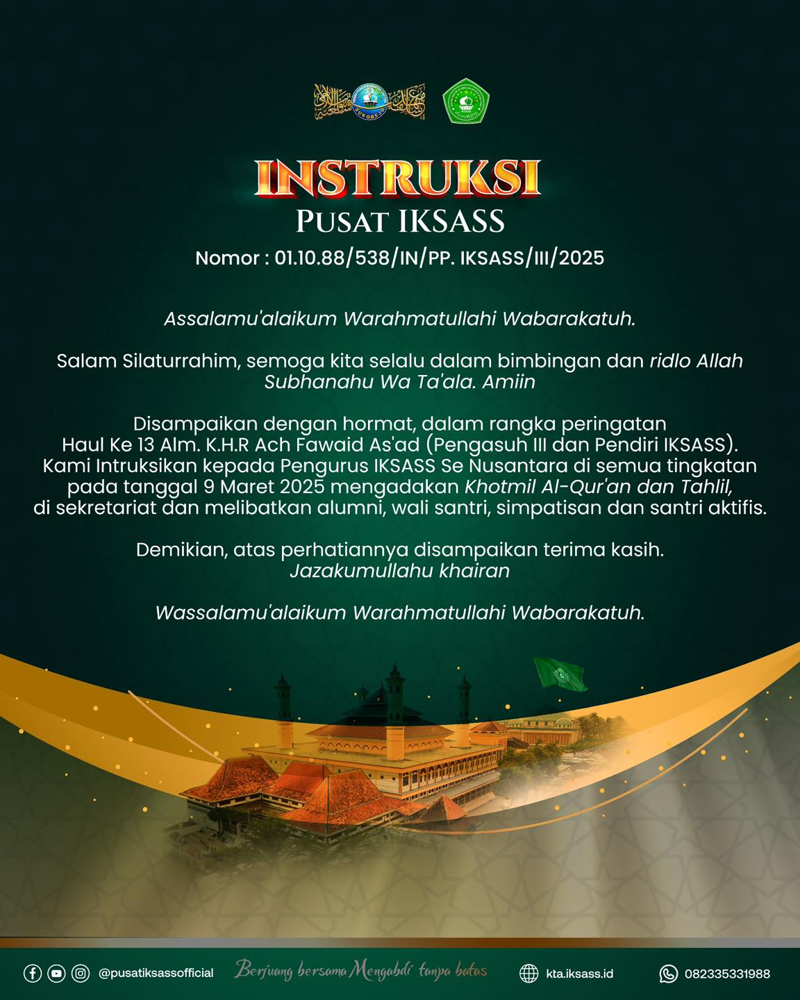
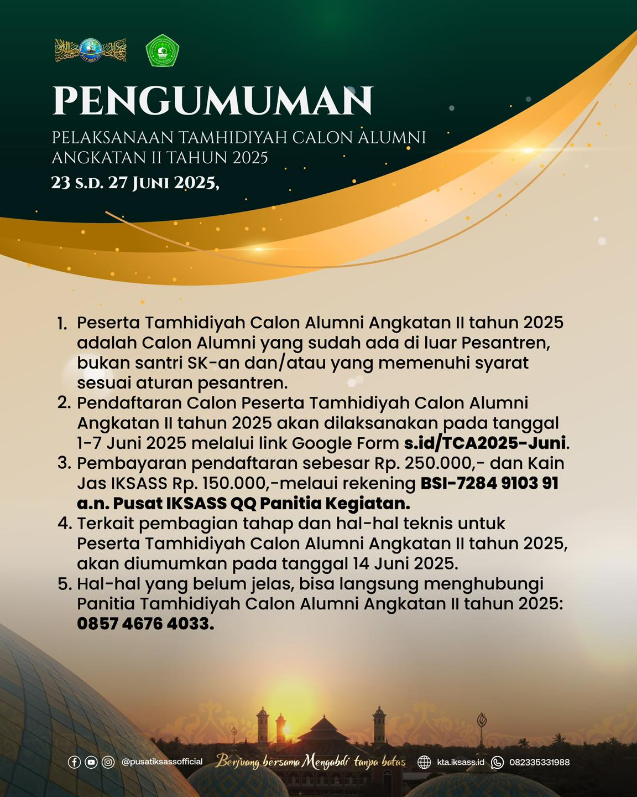
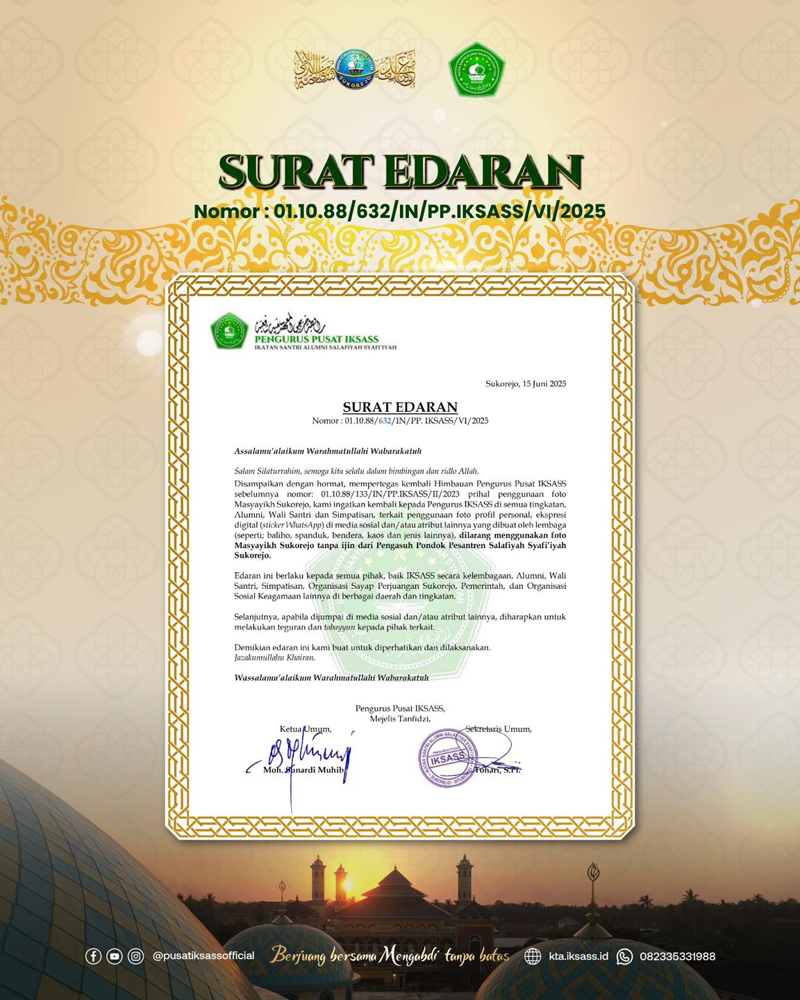
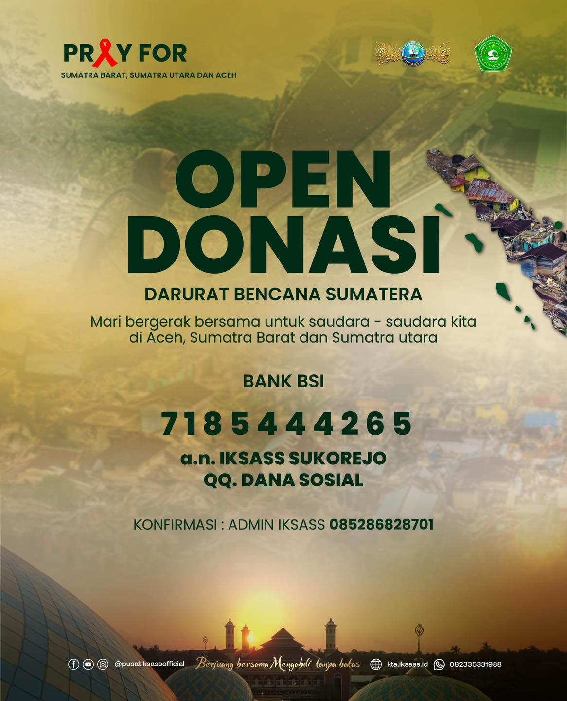

Info Organisasi
Info Organisasi
Info-info terkini organisasi (papan pengumuman).
Pengumuman & Pernyataan Sikap
Pernyataan sikap resmi organisasi terkait isu terkini

Instruksi
Instruksi Pusat IKSASS

Pengumuman
Tamhidiyah Calon Alumni 2025

Surat Edaran
Edaran resmi organisasi

Open Donasi
Darurat bencana Sumatera
Unduhan Dokumen
Rancangan Program Kerja PP IKSASS 2022–2026
PDF
Buka
Unduh
Mars IKSASS (Resmi)
PDF
Buka
Unduh
Hymne IKSASS (Resmi)
PDF
Buka
Unduh
AD/ART IKSASS (MUBES X)
PDF
Buka
Unduh